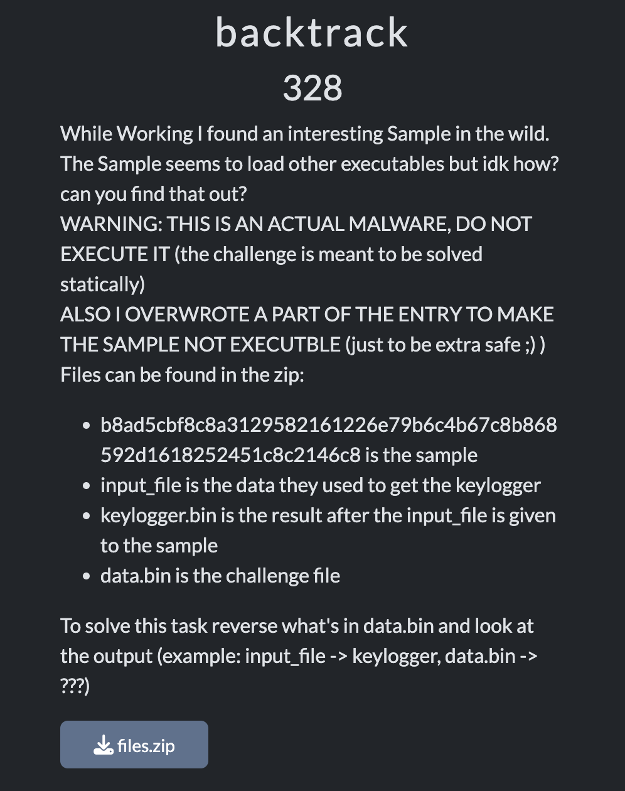
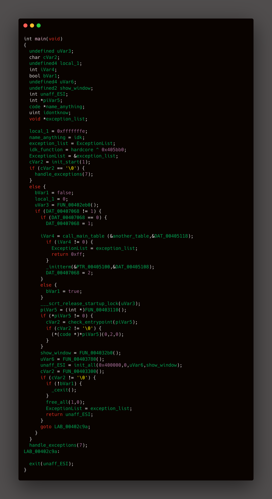

Nullcon HACKIM CTF 2025
I solved 7 challenges, but I'll share the most entertaining one.

Initial Investigation
We were given four files—two with a .bin extension and two with unknown extensions. After analyzing them with Binwalk, we found that the file b8ad5cbf8c8a3129... was malware (ApplicationFrameHost.exe) that loads payloads, while data.bin turned out to be a JPEG file. According to the challenge description, our task was to reverse data.bin and examine its contents.
After analyzing i constrcuted the main function
init_start()- is used for runtime initializationcall_main_table()- is used for setting up main function parameter
Here the most intresting function we all want to see is the init_all()
The functionality that resides in init_all(), which gets called after this setup phase. This function would handle:
1.Application-specific memory transformations
2.Core program operations